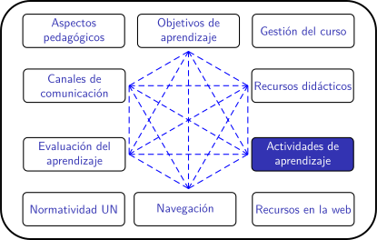
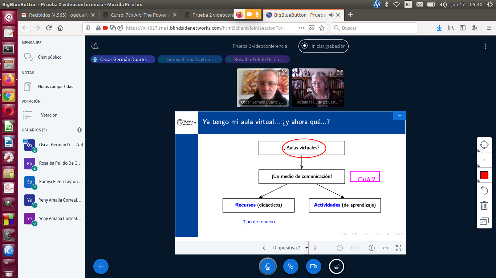

Cursos en la UN para el periodo 2020-02
Videoconferencia
¿Qué es una videoconferencia? algo de historia en la UN
|
En términos técnicos, la videoconferencia es un medio de comunicación multidireccional, simultáneo y en tiempo real entre 2 o más usuarios, con transmisión de video y audio. En términos más generales, son las "llamadas con cámara" que podemos hacer desde hace ya algunos años, gracias al avance de los sistemas de comunicación. La Universidad Nacional ha contado con diferentes servicios de videoconferenecia, al menos, desde comienzos de este siglo. Ya en el 2002 se utilizaba un sistema cerrado que permitía conectar las diferentes sedes en videoconferencia, y con otras universidades que tuviesen el mismo tipo de sistema. |
 |
En aquella época había puntos de contacto más o menos fijos en cada sede. En Bogotá había un equipo "portátil" que se podía llevar de una sede a otra. El entrecomillado es para recordar que se necesitaban dos personas para trasladar y operar el equipo. También por esa época se realizó la adecuación de la Sala de Videoconferencias en la Hemeroteca Nacional, en Bogotá.
La gestión de ese servicio era centralizada. Para acceder a él era necesario solicitarlo a los administradores. Quizás el uso más recurrente de este servicio era la sustentación de tesis con jurados a distancia. Sin embargo, algunos cursos se dictaban a través de esta vía también. Hoy en día el servicio inicial ha sido remplazado por otro más contemporáneo, Scopia, pero sigue gestionándose de forma centralizada.
Ya para el 2007, el programa de Universidad Virtual (lo que hoy es la DNIA) ofrecía el servicio de "Videochat". A través de un desarrollo propio (¡de punta para la época!)) se podían tener clases remotas con transmisión de vídeo y chat escrito. El servicio de vídeo permitía usar una cámara web y compartir la pantalla. Este servicio era gestionado de forma centralizada, y para tener acceso a él era necesario solicitarlo al programa de Universidad Virtual.
Un hito importante en el uso de la videoconferencia fue la instauración del Programa Especial de Admisión y Movilidad Académica - PEAMA, en el 2007. En su concepción inicial, las mayoría de las clases se ofrecían a los estudiantes de las sedes de presencia nacional a través de videoconferencia desde una de las sedes andinas. Ese recurso aún se utiliza hoy en día, aunque ya no es la modalidad principal.
Mientras tanto, la tecnología avanzaba rápidamente. En el 2003 nació Skype, con unos servicios y modelo de negocio novedosos. Skype puso la videoconferencia al alcance de cada computador conectado a internet, y más adelante en cada celular. Aproximadamente en el 2014 WhatsApp, el popular servicio de mensajería, habilitó la videollamada. Facebook incorporó sus servicios de llamada por vídeo y de streaming también hace ya varios años. Así las cosas, los servicios centralizados empezaron a perder vigencia.
En octubre del 2019 la DNIA implementó el servicio de videoconferencia dentro de la plataforma Moodle. El nombre de la herramienta es BigBlueButton. Gracias a ese servicio, docentes y estudiantes tienen a su disposición, cuando quiera, salas de videoconferencias con algunos servicios especialmente útiles en clases remotas (ver potencial pedagógico). Este servicio se implementa como una actividad dentro del aula virtual en Moodle.
En marzo del 2020 se habilitó el servicio de videoconferencia de Google Meet, para uso de los profesores de la universidad. Esta herramienta ha permitido el uso fluido de videoconferencias no solo para clases, sino también para tareas administrativas y reuniones colegiadas en medio de la cuarentena.
¿Cómo puedo organizar una videoconferencia en mi curso?
Hoy en día, los docentes de la Universidad Nacional tenemos a nuestra disposición, al menos las siguientes alternativas de videoconferencia:
- Google meet: es la herramienta de la suite de google para videoconferencias. Está integrada con la suite y por eso es muy práctica para enlazarla con el calendario. Más abajo encontrará indicaciones de su uso.
- BigBlueButton: es el servicio de videoconferencia que la DNIA ha incorporado dentro de las aulas virtuales de moodle. Se puede integrar a cada curso más de una videoconferencia y, si se desea, habilitarla para que sea usada por los estudiantes sin participación de docentes. Tiene unas opciones que la hacen particularmente interesante para su uso en clases remotas, que se exploran en el tema de potencial pedagógico, en este misma página. Más abajo encontrará indicaciones de su uso.
- Scopia: es el servicio de videoconferencia gestionado por la OTIC Bogotá. Para acceder a ella hay que contactar a los administradores del servicio.
- Zoom: es un servicio de videoconferencia privado. Cualquier persona puede tener una cuenta gratuita de ese servicio, con algunas limitaciones, siendo la más relevante que la duración de las videoconferencias no puede exceder los 40 minutos. La Facultad de Ciencias de la sede Bogotá ha comprado una licencia para que sus docentes puedan usarla sin esa restricción. Más abajo encontrará indicaciones de su uso.
- WhatsApp: desde el año 2014 hay un servicio de videollamada por esta popular red de mensajería. Muy recientemente se habilitó el servicio para un número de usuarios aún reducido para clases (8 usuarios) pero que puede ser útil en sesiones de tutoría. La universidad no tiene ningún tipo de convenio o acuerdo con esta empresa.
Potencial pedagógico
La videoconferencia se asocia a la clase magistral remota, pero ¿debe ser así? ¿es posible utilizar este medio de comunicación de otra forma?
A continuación presentamos algunas ideas orientadas a incentivar la participación de los estudiantes en sesiones de videoconferencia. Sabemos que la participación es fundamental en modelos como los de aprendizaje activo y aula invertida.
Hemos escogido la plataforma BigBlueButton de Moodle para mostrar cómo se pueden llevar a cabo estas ideas, pero varias de ellas también pueden implementarse haciendo uso de herramientas adicionales. También le recomendamos ver el trozo webinar del profesor Ken Bauer, del Instituto Tecnológico de Monterrey, en el que se refiere al uso de la videoconferencia.
|
Pasar al Tablero: Es posible emplear la pantalla del ordenador como un tablero de clases. Para ello basta con usar un programa de escritura o dibujo en el computador, y compartir la pantalla. Pero ¿Cómo hacer que un estudiante escriba en el mismo espacio que el profesor, o que otro estudiante?. La herramienta adecuada para ello es el "tablero multiusuario" del servicio de videoconferencia. Con él, los asistentes pueden escribir o dibujar y resaltar en un mismo espacio. Así, es posible formular actividades colaborativas en un mismo tablero. Hay alternativas que se pueden emplear en otros ambientes diferentes a BigBlueButton, como DrawChat. Una nota adicional: si usted usa un tablero desde una tablet con lápiz, podrá escribir directamente sobre la pantalla. |
|
|
Encuesta: El uso de encuestas en clase es una de las formas más fáciles de implementar los principios de aprendizaje activo. También es una estrategia eficaz para que el docente reciba realimentación instantánea por parte de sus alumnos y así tomar decisiones en linea sobre la asignatura. Mediante una encuesta el docente puede explorar qué tanto se han logrado algunos objetivos de aprendizaje e implementar evaluaciones formativas sencillas. También es posible explorar la opinión de los estudiantes frente a aspectos prácticos o logísticos de la asignatura, o emplear los resultados como detonante de discusiones. BigBlueButton tiene una herramienta de encuesta incorporado al ambiente de videoconferencia. También es posible realizar encuestas en línea mediante google forms, por ejemplo. |
|
|
Notas compartidas - Escritura colaborativa: En ocasiones puede ser útil disponer de un espacio en el que los asistentes a una videoconferencia construyan de forma colaborativa un documento. Una buena aplicación en clase es la de disponer de un espacio en el que los estudiantes formulen sus preguntas mientras se desarrolla la clase, y que otros estudiantes puedan dar respuestas allí mismo. En escenarios en los que la videoconferencia se utilice como punto de reunión para construir una solución a un problema o para analizar y obtener conclusiones, este espacio de escritura colaborativa puede ser el lugar en el que se concreten los acuerdos. BigBlueButton tiene un editor de texto colaborativo, denominado "Notas compartidas" integrado al servicio de videoconferencia. También es posible emplear google docs con el mismo fin. |
|
|
Salas separadas: En el salón de clase es muy fácil diseñar un taller de trabajo por equipos. Basta con dar una instrucción precisa, y disponer de un tiempo adecuado para que los estudiantes se orgabicen en equipos y aborden la tarea en el espacio de la clase. ¿Cómo hacerlo en clases remotas por videoconferencia? La alternativa son las "salas separadas". Mediante esta opción los asistentes pueden organizarse por equipos, y a cada equipo se le habilita una videoconferencia independiente y aislada de los demás equipos. Esto sucede durante un tiempo preestablecido por el presentador, al cabo del cual todos regresan automáticamente a la videoconferencia general. Esta es una funcionalidad incorporada en BigBlueButton y en zoom. |
El sistema de formularios de la suite de google.
El editor de textos colaborativos de la suite de google
Moodle - BigBlueButton
Dentro de la plataforma moodle se pueden crear videoconferencias en cada aula virtual. Si se desea, estas pueden quedar a disposición de los estudiantes para que puedan comunicarse por esta vía sin la participación del docente. También es posible crear espacios de trabajo independientes para equipos de estudiantes o para grupos de participantes en una sesión. Esta colección de videotutoriales muestra cómo se usa esta herramienta:
1. ¿Cómo crear una videoconferencia?
2. ¿Cómo subir una presentación?
3. ¿Cómo transmitir desde mi cámara web?
4. ¿Cómo grabar una sesión?
5. ¿Cómo compartir la pantalla de mi computador?
6. Otras opciones: Notas compartidas, encuestas, tablero, trabajo en grupos.
Google meet
El grupo GITEI ha elaborado un video de presentación sobre el uso de meet, disponible en el portal de Clases Remotas:
Y este video ha sido preparado en la Facultad de Ciencias de la sede Bogotá:
Reflexión
- Es muy probable que sus estudiantes tengan un grupo de chat en WhatsApp. ¿Cómo podría usted aprovecharlo para incentivar la participación en clases remotas por videoconferencia? Participe en el foro.
- Casi todas las herramientas de videoconferencia permiten chats públicos y algunas permiten chats privados ¿Qué actividades colaborativas puede desarrollar en ellos? Participe en el foro.
- Teniendo en cuenta la experiencia del semestre 2020-1 ¿Considera que todas las clases se deben realizar mediante videoconferencia? ¿Le he preguntado a sus estudiantes que opinan? Participe en el foro.
Obra publicada con Licencia Creative Commons Reconocimiento Compartir igual 4.0